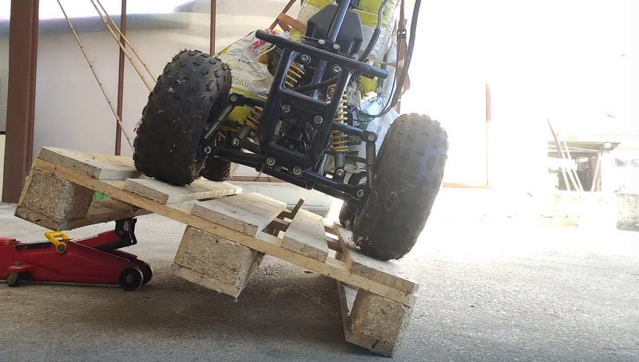
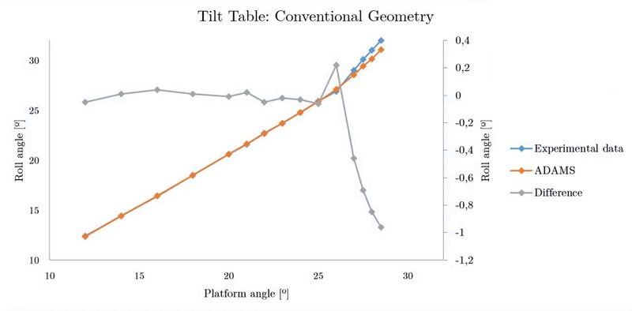
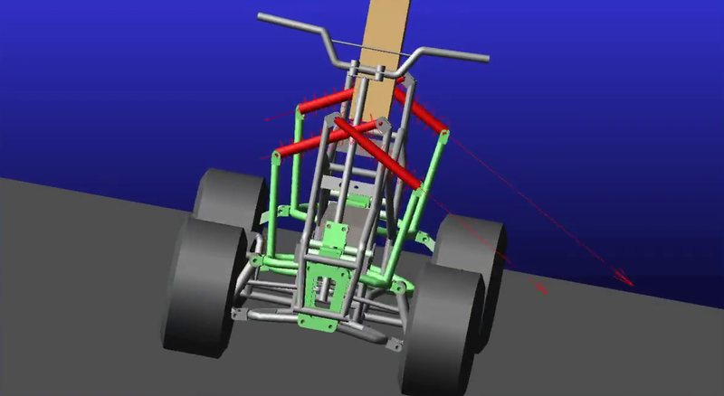
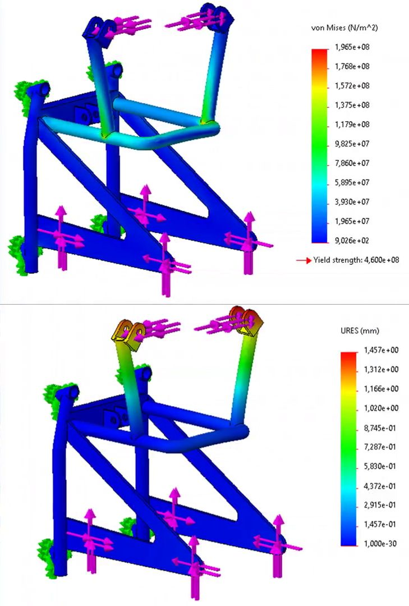
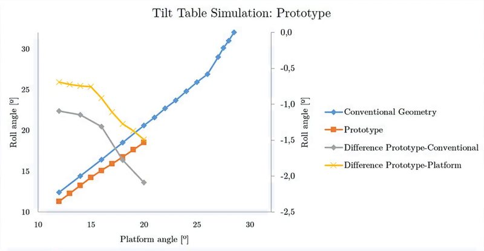

A reactive suspension that counters body roll
A suspension that counteracts body roll using only conventional, passive parts and no energy. Developed in ADAMS and validated on a real vehicle.
A suspension that counteracts body roll using only conventional, passive parts and no energy. Developed in ADAMS and validated on a real vehicle.

In a corner, lateral force rolls the body outwards and pulls the wheels away from their best angle to the road.
Active and semi-active systems can fight this, but they are heavy, complex, expensive and consume energy. The thesis asked a narrower question: can conventional, passive suspension elements be arranged so the vehicle counters roll on its own?
“Our purpose in designing the suspension and steering is to attempt to maintain the wheels at the optimum angle to the road surface at all times and under all conditions… This is the Holy Grail of the designer and is, in practice, unattainable.”
A simulation is only useful if you can trust it, so I started with a real vehicle. I bought a small quad, measured its centre of gravity and spring stiffness, and ran tilt-table tests on the standard suspension (Fig. 2). I then built an ADAMS model of the same vehicle and compared it with the measurements (Fig. 3).


With a baseline I could trust, I generated and compared several concepts in simulation, then developed the most promising one into a detailed design for the test vehicle: new front and rear suspension, modifications to the chassis, and a revised drivetrain. To fit the drivetrain, the rear track grew by 61 mm. Critical parts were checked with FEA, and the design was set up to accommodate different drivers.


Roll angle reached by the prototype design on the tilt table: it leans into the turn.
Rear track increase needed to package the new drivetrain.
Thesis grade, Instituto Superior Técnico.
The concept works: the prototype design reaches a negative roll angle in the tilt-table test (Fig. 6). For that to happen, the springs’ anchor points have to sit above the centre of gravity of the sprung mass.
It comes with a trade-off. Because the centre of gravity moves sideways as the body leans, the concept counters body roll but reduces rollover safety. The next step would be to build the prototype, repeat the tilt-table test and compare it with the model.
Fig. 6 Tilt table: standard vs reactive suspension
16°
